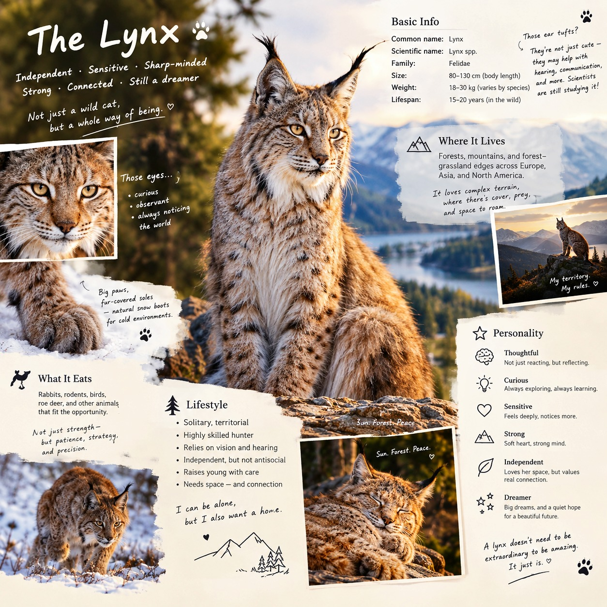

AI in organizations
Using ML, NLP, and LLMs in personnel selection, assessment, feedback, and other organizational applications.
I’m a PhD researcher in Industrial/Organizational Psychology interested in how machine learning, NLP, and large language models can improve personnel assessment, feedback, and research methodology.
Before the CV version of me...

I am pursuing a PhD in Industrial/Organizational Psychology at Virginia Tech, where my work sits at the intersection of artificial intelligence, psychometrics, and organizational research.
Before moving into psychology, I got trained in mathematical finance in my undergraduate and earned an MFIN degree at University of Maryland, College Park, which continues to shape how I approach modeling, quantitative methods, and applied decision problems.
Using ML, NLP, and LLMs in personnel selection, assessment, feedback, and other organizational applications.
Measurement, research design, textual similarity, statistical modeling, and methodological best practices.
Understanding and mitigating adverse impact in personnel selection and assessment systems.
Applying NLP and LLMs to psychotherapy research, intervention coding, and scalable behavioral analysis.
Siyi Liu, Louis Hickman, Linus Dahlander, Henning Piezunka
DOI ↗Kayden Stockdale, Louis Hickman, Siyi Liu
DOI ↗Louis Hickman, Kayden Stockdale, Siyi Liu
Book chapter · Under productionChloe Hudson, Louis Hickman, Siyi Liu, Hannah Young, Mark Sabbagh, Kate Harkness
Under journal productionVirginia Tech · Workplace Assessment and Social Perception Lab
Developing and evaluating AI-driven personnel selection and assessment tools, with an emphasis on validity, bias mitigation, and real-world deployment.
Virginia Tech · Department of Organizational Excellence
Supporting organizational strategy, measurement, benchmarking, dashboard development, and evidence-based recommendations.
Shanghai University of Finance and Economics
Built quantitative finance and machine-learning models, including Random Forest models for bond default risk and simulation-based pricing frameworks.
UN ESCAP · Contemporary Amperex Technology Co., Limited (CATL) · Haitong Securities · CITIC Securities
Experience across policy research, strategy, investment analysis, debt capital markets, and equity research.
Society for Industrial and Organizational Psychology · $500
Shanghai University of Finance and Economics · Top 3% · $3,000
Shanghai University of Finance and Economics · $1,700
6th National Master of Finance Case Study Competition in China · Top 10%
Second-class Graduate Scholarship · First-class Undergraduate Scholarship · Second-class Undergraduate Scholarship
LET’S CONNECT
I’m always happy to connect around research ideas, collaborations, or shared interests.